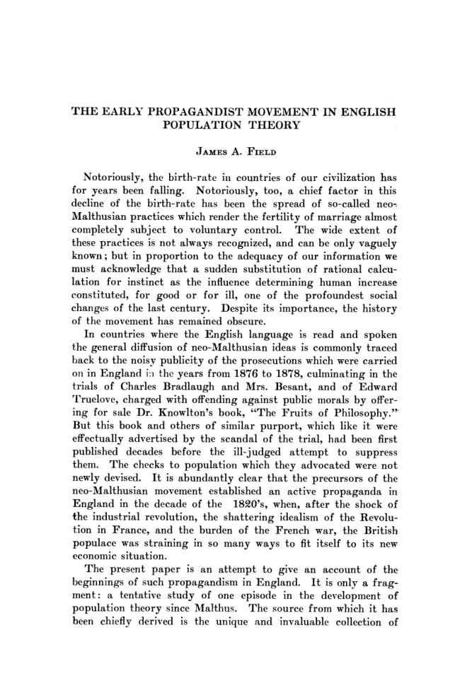

St. Louis, 1910: preços desde 1896, Ricardo aos cem anos e educação
Leitura: 6 min
St. Louis, dezembro de 1910: Laughlin e Fisher divergem sobre a alta dos preços, Hollander e Bonar medem a herança de Ricardo e James pede um sistema nacional de educação.


O discurso presidencial abre com uma lembrança e uma ressalva. Edmund J. James recorda aos sócios que, pouco mais de 25 anos antes, um grupo de economistas jovens conseguira organizar a associação. Ele queria, já então, que ela sustentasse um programa positivo de reformas econômicas e sociais. Os colegas da fundação não concordaram, e a associação ficou como era.
“principalmente um corpo científico, puro e simples” (“primarily a scientific body, pure and simple”)
O volume reúne as comunicações e os debates da vigésima terceira reunião anual, realizada em St. Louis, no Missouri, em dezembro de 1910. A folha de rosto o identifica também como Bulletin da associação, quarta série, nº 2, de abril de 1911. As sessões trataram de moeda e preços, do centenário de Ricardo, de contabilidade de custos, de rios, canais e ferrovias, de população e imigração, de doenças do trabalho e indenização de acidentes, de tributação estadual e de socialismo.
O que James pedia aos economistas?
James acha que, onde houvesse acordo entre os economistas, eles deveriam tomar posição. Seu exemplo é a divisão do gasto público. Cerca de 25 anos antes, ele estimara o gasto federal desde 1789 e concluíra que quase tudo fora para a guerra, entendida como preparação, condução e pagamento das contas depois dela.
A alternativa que ele propõe é um sistema nacional de educação que alcance toda criança, acrescente instrução técnica à formação básica e ofereça aos jovens, depois da idade escolar obrigatória, pelo menos dois ou três anos de escola. Parte do custo caberia ao governo federal. James lembra que defendera o Blair bill, que distribuiria US$ 50 milhões aos estados para o ensino elementar e secundário, e que o projeto não passou.
Por que os preços subiam desde 1896?
A primeira sessão opôs J. Laurence Laughlin e Irving Fisher. Laughlin argumentou que a nova demanda por ouro, dos países que adotavam o padrão-ouro, acompanhava a nova oferta, e buscou as causas da alta em tarifas, salários, custos agrícolas, monopólios, extravagância e especulação. Fisher respondeu com a equação de trocas e estatísticas novas. Pelo seu cálculo, se a moeda em circulação não tivesse mudado, o nível de preços de 1909 seria 45% mais baixo. O debate tem página própria.
O que restava de Ricardo cem anos depois?
A segunda sessão marcou o centenário de The High Price of Bullion, de 1810. Jacob H. Hollander atribuiu a Ricardo a transformação da economia numa ciência dedutiva, com doutrinas duradouras sobre moeda, incidência de impostos e comércio internacional. James Bonar mostrou como a ideia de proporção organiza toda a obra, da distribuição internacional do ouro à teoria dos lucros. A sessão também tem página própria.
Que outros temas ocuparam a reunião?
Três contadores divergiram sobre se juros e aluguel entram no custo de um produto. Ernest R. Dewsnup contestou as vantagens da estatização das ferrovias. Na sessão conjunta com a American Association for Labor Legislation, Alice Hamilton apresentou o levantamento de Illinois sobre doenças ocupacionais.
Na tributação, T. S. Adams pediu que os economistas reconsiderassem a oposição quase unânime ao imposto estadual sobre a renda, que Wisconsin estava prestes a adotar, e E. R. A. Seligman reafirmou a sua. John Martin perguntou a economistas o que é socialismo; vários responderam que o termo não admitia definição.
Na minha leitura
Na minha leitura, o volume mostra a disciplina dividida entre dois modos de provar. Fisher, Hamilton e Adams trazem números novos, coletados para responder a uma pergunta; Laughlin, os contadores e o centenário de Ricardo raciocinam a partir de princípios. Os dois métodos discutem quase sempre a mesma coisa: o que é causa e o que é efeito.
A proposta de James tem um conteúdo econômico que vai além da defesa da escola. Ele trata a composição do gasto público como decisão de investimento: o mesmo dinheiro gasto em armamentos ou em obras sem retorno poderia formar capacidade produtiva. É um argumento de custo de oportunidade aplicado ao orçamento.
Glossário
- Teoria quantitativa da moeda
- tese de que, mantidas as demais condições, o nível de preços varia em proporção à quantidade de moeda.
- Equação de trocas
- identidade de Fisher, MV + M'V' = PT, entre os pagamentos feitos com moeda e cheques e o valor das transações.
- Depósitos sujeitos a cheque
- saldos bancários movimentáveis por cheque, distintos dos depósitos de poupança e a prazo.
- Renda diferencial
- na teoria de Ricardo, o pagamento pelo uso das terras melhores, medido pela vantagem sobre a terra marginal, que não paga renda.
- Incidência tributária
- quem suporta de fato o ônus de um imposto, depois de todos os repasses de preço.
- Incremento não ganho
- valorização de um bem, sobretudo da terra, que não resulta do trabalho ou do investimento do dono.
- Indenização por acidente de trabalho
- obrigação legal do empregador de pagar uma soma fixa ao empregado acidentado, independentemente de culpa.
- Contabilidade de custos
- ramo da contabilidade que atribui a cada produto os gastos com material, trabalho e tempo necessários para fabricá-lo.
- Feitorias do governo (government factories)
- postos comerciais mantidos pelo governo americano para negociar peles com os povos indígenas.
Artigos (32)
- The Economic Significance of a Comprehensive System of National Education: Annual Address of the President — Edmund J. James; discurso presidencial (pp. 1–25). No discurso presidencial, James propõe que a associação tome posição sobre a distribuição do gasto público. Por estimativa própria, de cerca de 18 bilhões de dólares gastos pelo governo federal desde 1789, 16,5 bilhões foram para a guerra em sentido amplo. Sustenta que o país gasta demais com guerra e de menos com educação, e que a forma de consumir a riqueza condiciona sua produção. Para ele, treinar os talentos da população pesa mais do que conservar recursos naturais. O sistema que defende alcança toda criança, combina ensino geral e técnico, inclui escolas de ofícios e cursos de continuação por dois ou três anos após a idade obrigatória. Deve ser nacional no alcance, no custeio e nos ideais: a localidade que forma um aluno raramente colhe o benefício, que migra com ele, e muitos estados não têm receita para tanto. Propõe uma transferência federal de um dólar por habitante ao ano, cerca de 100 milhões, destinada à educação prática. Cita como precedentes as concessões de terras e as leis de 1862, 1887 e 1890: nos 69 colégios de agricultura e artes mecânicas, cada dólar federal teria atraído cerca de oito dos estados. Lembra o Blair bill, que apoiou. JSTOR
- Causes of the Changes in Prices Since 1896 — J. Laurence Laughlin (pp. 26–36). Laughlin divide o problema em duas partes, os preços das mercadorias e os preços dos títulos, porque, a seu ver, suas causas são muito diferentes, embora costumem ser tratadas como iguais. Enuncia dez proposições sobre a teoria dos preços. O preço se forma no mercado de cada bem, e a quantidade de meios de troca é resultado, e não causa, desse processo. Admite que mais ouro tenderia a elevar preços, mantido o resto, mas sustenta que a demanda acompanhou a oferta: Rússia, Japão, Argentina, Brasil e México aderiam ao padrão-ouro, e os Estados Unidos absorveram 994 milhões de dólares em ouro desde 1895. A causa da alta estaria nos demais fatores: a tarifa Dingley de 1897, salários maiores sem ganho de eficiência e, sobretudo, o encarecimento dos alimentos. Na margem entre custo e preço final, aponta monopólios que cobram o que o mercado suporta, a extravagância dos ricos e a especulação, que se estende das mercadorias aos títulos. Para os títulos, usa os gráficos de Brookmire com 20 ações de ferrovias e 12 industriais entre 1890 e 1910, e examina lucros, expansão do crédito e excesso de emissões. JSTOR · ler o comentário
- Recent Changes in Price Levels and Their Causes — Irving Fisher (pp. 37–45). Fisher defende que a velha teoria quantitativa precisa ser reformulada, não rejeitada, e resume o capítulo XII de seu livro The Purchasing Power of Money, distribuído na reunião. Para ele, o nível geral de preços e o preço de cada bem pedem explicações distintas, como a maré e as ondas: a oferta e a demanda de cada mercadoria já pressupõem um poder de compra da moeda. Pela equação de trocas, MV + M'V' = PT, o nível de preços seria o elemento passivo. Com estatísticas novas de moeda, depósitos sujeitos a cheque, velocidades e comércio, calcula P e o compara ao observado, com correções em geral abaixo de 1%. Os depósitos sujeitos a cheque, mostra, chegavam a ser só dois terços dos depósitos individuais publicados. Entre 1896 e 1909, a moeda em circulação dobrou, os depósitos quase triplicaram, o comércio dobrou e os preços subiram cerca de dois terços. Sem o aumento da moeda, os preços de 1909 seriam 45% mais baixos; sem o dos depósitos relativos, 23%; sem o da velocidade dos depósitos, 28%; o crescimento do comércio, ao contrário, os conteve. Conclui que a causa principal foi a moeda, ligada ao ouro novo. JSTOR · ler o comentário
- Money and Prices: Discussion — D. F. Houston, E. W. Kemmerer, Joseph French Johnson, Murray S. Wildman, T. N. Carver, F. W. Taussig, Ralph H. Hess, J. Laurence Laughlin e Irving Fisher (pp. 46–70). Houston, citando Cairnes, atribui a alta ao ouro novo: entre 1896 e 1909 produziram-se 4,6 bilhões de dólares, mais da metade do extraído entre 1493 e 1895. Kemmerer concorda com Fisher no essencial, rejeita a separação entre nível geral e preços individuais, descreve a cadeia que leva do ouro às reservas e aos juros e acusa Laughlin de petição de princípio. Johnson nega a analogia entre dólares e vagões. Wildman diz que a equação não mostra causas e que a demanda por ouro segue desconhecida. Carver admite que os preços podem puxar a moeda; Taussig, que o comércio puxa os depósitos; Hess, que PT determina o crédito. Laughlin replica que a equação é enunciado, não solução. Fisher remete ao livro. JSTOR · ler o comentário
- The Work and Influence of Ricardo — Jacob H. Hollander (pp. 71–84). Hollander abre com um contraste. Em 31 de maio de 1876, o centenário da Riqueza das Nações foi celebrado em Londres como tributo a um livro; o de The High Price of Bullion, de janeiro de 1810, um panfleto de cerca de cinquenta páginas, seria o tributo a uma influência. Retoma a pergunta que McCulloch fizera aos economistas ingleses: o que Ricardo acrescentou à ciência? Examina primeiro as condições dessa influência. Depois de 1797, o debate inglês passou da produção para a distribuição da riqueza entre classes, e Ricardo tinha a capacidade de isolar uma força e seguir suas consequências. Seus discípulos, sobretudo McCulloch, deram ampla circulação às ideias. Hollander atribui a Ricardo a base de doutrinas duradouras sobre moeda, incidência de impostos e comércio internacional, esta como fundamento do livre-comércio. Separa sua obra das leituras radicais posteriores: o trabalho incorporado era medida, e não causa, do valor. Conclui que a contribuição efetiva foi de método: Ricardo, interessado em química e geologia, concebeu a economia como ciência positiva, dedutiva, testada pelos fatos de seu tempo, em contraste com a exposição de Adam Smith. JSTOR · ler o comentário
- Where Ricardo Succeeded and Where He Failed — James Bonar (pp. 85–96). Bonar parte da crise do papel-moeda inglês. O relatório do Bullion Committee, presidido por Francis Horner, foi apresentado à Câmara dos Comuns em 8 de junho de 1810; no início daquele ano, o ouro em barra valia cerca de 15% acima do preço da Casa da Moeda. Nas cartas ao Morning Chronicle de 1809 e no panfleto sobre o preço do ouro, Ricardo diagnosticou a emissão excessiva, agravada pela suspensão dos pagamentos em espécie desde 1797. O comitê endossou o diagnóstico; a Câmara o rejeitou, mas em dez anos ele virou lei. Para Ricardo, cada nação precisa de uma quantidade definida de moeda, proporcional a seu comércio, e os metais fluem para restaurar essa proporção. Bonar sugere que dessa teoria monetária nasceu a do comércio exterior, com o custo comparativo exposto numa nota de rodapé. A categoria favorita de Ricardo seria a proporção. O êxito duradouro está na moeda, na renda, na tributação e na dívida pública, que não se ensinam sem ele, mais no método do que nos resultados. Bonar observa que o tratado se lê como uma série de ensaios e que Ricardo escrevia melhor em panfletos. JSTOR · ler o comentário
- The Ricardo Centenary: Discussion — Alvin S. Johnson, Lewis H. Haney e H. C. Taylor (pp. 97–109). Johnson diz que todos são ricardianos. O sistema clássico, que trata de proporções, serve para comércio, moeda e impostos, mas não para a distribuição em quantidades absolutas, campo dos teóricos psicológicos, que formariam uma corrente nova. Haney vê em Ricardo uma abstração dupla, dos fatos e das ciências vizinhas, e uma filosofia materialista que, mais do que o método, explicaria seus dogmas. Atribui-lhe também parte da responsabilidade pelo radicalismo econômico posterior. Taylor critica a premissa ricardiana de que todos os agricultores têm a mesma produtividade econômica. Para ele, a renda de mercado resulta da concorrência entre arrendatários desiguais, e a tarefa é catalogar as forças que a elevam ou reduzem. JSTOR · ler o comentário
- The Economic Aspect of Cost Accounts and Its Application to the Accounting of Industrial Companies — Arthur Lowes Dickinson (pp. 110–123). Dickinson sustenta que a ignorância dos princípios de custo é uma das causas da concorrência excessiva. Define fabricação em sentido amplo, incluindo o transporte, e decompõe o custo em material, trabalho e tempo. O lucro, diferença entre custo e valor de venda, seria divisível entre o dono do recurso natural, o trabalho e o capitalista; o trabalho em geral troca sua parte por um pagamento antecipado, e Dickinson vê na participação nos lucros um caminho para reduzir o conflito. Aponta como custo esquecido a reposição de recursos como florestas e solos. Juros e aluguel seriam divisão do lucro, como já fazem as contas ferroviárias; por isso o custo comercial de bens idênticos varia com o grau de integração da empresa. Trata da distribuição dos custos indiretos por departamento, julga pouco científico o rateio pelo trabalho direto e separa custo de fabricação de custo de venda. Com capacidade ociosa, vender acima do custo direto pode dar lucro. Conclui que nenhuma investigação sobre tarifas ferroviárias estaria completa sem examinar a margem entre custo e preço de venda, nas ferrovias e na indústria. JSTOR
- Accounting Methods for Determining Costs and Prices — William Morse Cole (pp. 124–135). Cole descreve a contabilidade como um ramo da economia que obriga os guarda-livros a abandonar tradições de gerações. Parte de duas premissas: a contabilidade abrange toda empresa, inclusive as que não buscam lucro, e trata de fatos, não de política. Sua função seria dizer a verdade econômica, sem misturar valores conhecidos com estimativas, segundo o preceito científico de isolar causas. O juro comum embute remuneração do risco, que pode entrar duas vezes no preço. Cole propõe contar como custo apenas o juro puro, cerca de 2%, e tratar o risco como figura final, no lucro. Diverge assim de Dickinson, que exclui todo juro do custo. Para julgar tarifas e lucros, defende registrar o investimento efetivo, o custo de sacrifício, e não avaliações ou custos de reposição, com a depreciação baixada do ativo. Sobre o aluguel, sustenta que a renda econômica mede a vantagem sobre a margem e deve entrar no custo padrão; excluí-la levaria a preços que não se sustentam. JSTOR
- Cost Units — William Arthur Chase (pp. 136–144). Chase parte dos requisitos da produção na exposição de Mill: trabalho, capital e terra. Adverte contra o uso comercial de “produtivo”: superintendentes, guarda-livros e contadores fariam trabalho tão produtivo quanto o dos operários. Da terra deriva a renda; do desgaste do capital fixo, a depreciação; e o lucro, recompensa da abstinência, se decompõe em juro, seguro contra o risco e salário de superintendência. Propõe apresentar as contas em três divisões: uma conta de fabricação, que leva ao lucro bruto; uma de lucros e perdas, que leva ao lucro líquido; e uma terceira em que aparecem o juro sobre o capital e a remuneração do risco. Sugere que também as sociedades anônimas lancem juros sobre capital e reservas, como já fazem firmas individuais. Reconhece que muitas fábricas acham caro apurar custos unitários, mas sustenta que contas assim organizadas mostrariam a economistas a parcela do custo que cabe a cada fator. Encerra com uma defesa do trabalho conjunto de economistas e contadores como contribuição ao progresso material e social. JSTOR
- Accountancy: Discussion — Edward L. Suffern, J. C. Duncan, Allen R. Foote, L. G. Powers e A. Lowes Dickinson (pp. 145–153). Suffern formula perguntas: que elementos de custo comparar para a Comissão de Tarifas e como reservar lucros contra o esgotamento de minas. Duncan sustenta que aluguel, juros e o salário do empresário são custos e critica as contas ferroviárias, que mostram receitas por serviço e despesas por critério de engenharia. Foote pede auditoria anual por contador público escolhido pelos acionistas. Powers aponta três sentidos distintos para “reserva”. Dickinson replica que juro sem risco é um mito e lembra que peritos estimaram o tráfego de passageiros de uma ferrovia entre lucro e prejuízo de cerca de 1 milhão de dólares. JSTOR
- Some Desirable Governmental Policies for River Improvement — Wm. W. Harts (pp. 154–165). Para o major William W. Harts, do Corpo de Engenheiros do Exército, a prosperidade depende da facilidade de comunicação, e quase todas as nações aceitaram que o Estado ajude o transporte. Nos Estados Unidos, a melhoria federal de rios firmou-se como política por volta de 1870, mas cresceu projeto a projeto, por pressão local e sem coordenação. Apesar de obras valiosas, como o canal de Louisville e Portland, o comércio fluvial declinou. Harts atribui boa parte do declínio a práticas das ferrovias: tarifas abaixo do custo nos pontos de concorrência, compensadas nos pontos sem concorrência, linhas de vapor temporárias e compra de ações de empresas de barcos. Ele propõe três políticas. Primeira, regulação mais estrita das ferrovias. Segunda, coordenação: ampliar os poderes do Board of Engineers for Rivers and Harbors, criado em 1902, para que prepare um plano abrangente, escolha prioridades e garanta a conclusão das obras iniciadas. Terceira, cooperação local: condicionar cada projeto federal à construção, pelas comunidades beneficiadas, de terminais, cais e armazéns abertos ao público em termos iguais. Segundo Harts, “um canal sem terminais é como uma ferrovia sem desvios” (A channel without terminals is like a railroad without sidings). JSTOR
- Inland Waterway Policy — Emory R. Johnson (pp. 166–174). Emory R. Johnson parte do apoio crescente à melhoria das vias navegáveis e pergunta que condições precisam ser cumpridas para que ela dê certo. Aponta quatro. A primeira é limitar as obras às que podem ser financiadas e concluídas em prazo razoável; o zelo local por novos projetos seria o maior obstáculo. Ele descarta uma comissão independente nos moldes do projeto Newlands e quer manter o Corpo de Engenheiros, com mais autonomia e mais pessoal. A segunda é um plano de financiamento. Johnson prefere pagar com receita corrente, mas admite que ela não basta; empréstimos exigiriam fonte definida para juros e amortização. Daí a defesa de pedágios moderados em canais e eclusas, na medida em que o tráfego os suporte, a exemplo da França, cuja lei de 1903 exige dos beneficiados metade do custo das obras novas, e da Prússia, com a lei de 1905. A terceira é a cooperação entre União, estados e municípios, já que navegação, energia, cheias e irrigação formam um só problema. A quarta são terminais públicos modernos. O Reno, diz, tem 62 portos equipados; Frankfurt gastou US$ 2,5 milhões em obras portuárias entre 1883 e 1900 e constrói um terminal de US$ 18 milhões. JSTOR
- The Attitude of the State Toward Railways: A Discussion of the Question of Nationalization — Ernest R. Dewsnup (pp. 175–187). Ernest R. Dewsnup observa que a maioria dos países já adotou a estatização das ferrovias, mas sustenta que a questão continua aberta. A onda iniciada entre 1868 e 1878 teria tido motivos sobretudo políticos, não prova econômica. O teste financeiro, embora prejudicado pela contabilidade confusa das empresas estatais, é desfavorável: em 1907 as redes estatais europeias, exceto Prússia e Saxônia, renderam cerca de 3% sobre o capital declarado, a francesa 1,87% e a italiana 2,18%, enquanto os Estados pagavam de 3,5% a 4% pelo dinheiro. A Prússia, único caso de sucesso duradouro, teria condições excepcionais: população densa, mão de obra barata, monopólio. Ainda assim, entre 1880 e 1908 as tarifas de carga caíram cerca de 15% lá e quase 40% nos Estados Unidos; em 1908 a receita média por tonelada-milha era de 1,24 centavo na Prússia e 0,754 nos EUA. O coeficiente operacional prussiano subiu de 62,67 em 1905 para 74,62 em 1908. Dewsnup aponta a subordinação da ferrovia ao Tesouro, a perda de iniciativa dos funcionários e o risco de o Estado competir com os cidadãos. Conclui que estatizar é trocar gestão privada controlada por gestão estatal sem controle, mudança “desfavorável ao progresso econômico” (unfavorable to economic progress). JSTOR
- The Place of the Canal in a National System of Transportation — W. F. Gephart (pp. 188–196). W. F. Gephart propõe voltar às origens do problema dos transportes americano: um país vasto, cargas de matérias-primas de baixo valor e grande volume, população esparsa e pouco capital. Nessas condições, cada localidade disputou rotas sem plano; Ohio construiu três canais entre o lago Erie e o rio Ohio porque tinha três centros de população a contentar. Por volta de 1840 os canais já operavam, mas funcionavam poucos meses por ano e eram mal organizados; a ferrovia, construível em qualquer lugar e em qualquer escala, venceu. Segundo o autor, o tráfego deixou as vias aquáticas sem que fosse preciso discriminação tarifária. Hoje, argumenta, os papéis se invertem: os canais serão complementares e parte de rotas de longa distância ligadas aos grandes troncos naturais, isto é, rios, lagos e oceano. Ele examina os fluxos de carvão, minério de ferro, produtos agrícolas e manufaturados para mostrar onde a água teria uso, e prevê que o transporte local caberá à estrada melhorada e ao veículo motorizado. Recomenda o comboio de barcaças rebocadas, e não canais para navios, e pede que técnicos imparciais respondam a duas perguntas antes de cada obra: o canal pode ser construído, e com que profundidade? Haverá tráfego para ele? JSTOR
- Canals and Railways: Discussion — W. M. Acworth, John H. Gray, H. G. Moulton e Emory R. Johnson (pp. 197–203). W. M. Acworth concorda com Dewsnup e lamenta que ninguém tenha tratado do custo total da via aquática, capital e manutenção incluídos; pelos números oficiais franceses, diz, ele supera o da ferrovia. John H. Gray contesta as premissas de Dewsnup: o artigo compararia a gestão pública real com uma gestão privada ideal, e o Estado precisaria ser fortalecido. H. G. Moulton traz cifras: Prússia e Frankfurt terão gasto cerca de US$ 23 milhões no rio Meno, perto de US$ 1 milhão por milha, e o canal Dortmund-Ems teve em 1905 déficit de cerca de 58 centavos por tonelada. Emory R. Johnson responde que estudos de tráfego devem preceder qualquer obra. JSTOR
- The Occupational Distribution of the Labor Supply — T. N. Carver (pp. 204–206). T. N. Carver não leu um artigo; submeteu proposições para debate. A primeira trata da distribuição: boa parte da má distribuição da riqueza viria da má distribuição dos homens entre as ocupações, com excesso nas não qualificadas e falta nas qualificadas e profissionais. Como os filhos de pais presos a ocupações mal pagas teriam menos chance de subir, Carver considera que ajudaria reduzir a natalidade nesses grupos. A segunda trata da imigração. Enquanto os imigrantes entrarem em maior proporção nos escalões inferiores do trabalho, sustenta, a imigração contínua acirrará a concorrência entre trabalhadores e a reduzirá entre empresários e profissionais, elevando a renda dos empregadores e deprimindo salários. Dará também baixa produtividade marginal ao trabalhador adicional; Carver ilustra com a pólvora, em que carvão em excesso nada acrescenta sem enxofre e salitre. Muito trabalho a supervisionar diante de pouca capacidade gerencial levaria a turmas grandes, salários baixos e ordenados altos. Na agricultura, haveria subdivisão excessiva das terras ou uma classe de proprietários diante de um proletariado rural sem terra. A terceira proposição descreve os cenários que Carver prevê quando grupos imigrantes e população não se misturam pelo casamento: separação geográfica, separação social ou conflito persistente. JSTOR
- The Early Propagandist Movement in English Population Theory — James A. Field (pp. 207–236). James A. Field investiga as origens da propaganda pelo controle voluntário da natalidade na Inglaterra, que costuma ser datada dos processos de 1876 a 1878 contra Charles Bradlaugh e a sra. Besant. Com base nos papéis de Francis Place no Museu Britânico, ele sustenta que a campanha ativa começou na década de 1820. Malthus pregava a restrição moral, isto é, o adiamento do casamento, e rejeitava restrições dentro dele. James Mill insinuou outra via em 1818, e Place a defendeu abertamente em 1822, nas Illustrations and Proofs of the Principle of Population. Em julho de 1823, folhetos dirigidos aos casados chegaram a Mary Fildes, em Manchester, e o caso correu pela imprensa radical. Field reúne indícios de que Robert Owen aprovava o método e conclui que os folhetos vieram provavelmente de Place ou de seu círculo. Mostra também a conversão de Richard Carlile, cujo Every Woman's Book vendeu cinco mil exemplares em oito meses, e situa o centro do movimento no grupo benthamista; John Stuart Mill, aos 17 anos, esteve num grupo abordado pela polícia pela distribuição desses papéis. Para Field, os propagandistas raciocinavam dentro de uma teoria salarial estreita, mas o tema merece exame mais sério do que recebeu. JSTOR
- The Relation of Oriental Immigration to the General Immigration Problem — J. Allen Smith (pp. 237–242). J. Allen Smith examina a imigração asiática como parte do problema migratório geral. A Costa do Pacífico, diz, depende de boas relações com o Oriente, cuja importância cresce com a industrialização do Japão e da China e com a posse das Filipinas. Por isso ele quer evitar leis dirigidas contra nações asiáticas: a discriminação poderia gerar represálias comerciais, como o boicote chinês de 1905 a produtos americanos. Ainda assim, Smith defende manter essa imigração em limites estreitos, invocando a concorrência direta com os trabalhadores locais, e prefere alcançar esse fim por uma lei geral que trate todas as nações da mesma forma. O núcleo do artigo é econômico. A política original foi de laissez-faire, reforçada por empregadores e companhias de navegação que lucravam com a vinda de mão de obra barata; a lei contra o trabalho contratado teve sucesso limitado. Para Smith, a restrição ampla decorre da própria proteção tarifária: se a tarifa existe para manter salários altos, é incoerente barrar bens feitos com trabalho barato e admitir livremente o trabalhador. Isso seria aplicar o livre-comércio ao mercado de trabalho. Ele conclui que nenhum teste isolado bastaria e que uma combinação deles excluiria grande parte dos imigrantes hoje admitidos. JSTOR
- Population and Immigration: Discussion — James Bonar, J. K. Towles, H. A. Millis, Isaac A. Hourwich, Carl Kelsey, B. H. Hibbard, R. B. Brinsmade e T. N. Carver (pp. 243–256). James Bonar vê no movimento uma heresia prática nascida de Malthus. J. K. Towles liga a imigração ao crescimento das grandes fortunas e a agentes que contornam a lei do trabalho contratado. H. A. Millis resume a Comissão de Imigração, que recomenda restringir a entrada de mão de obra não qualificada e cuja maioria prefere o teste de leitura e escrita. Isaac A. Hourwich responde que a imigração acompanha a demanda por trabalho e que o imigrante, pagando preços americanos, exige salários americanos. Carl Kelsey pede cautela; B. H. Hibbard quer mais imigrantes aptos a virar agricultores; R. B. Brinsmade atribui a pressão salarial às leis de distribuição da riqueza; Carver defende a fazenda familiar e teste educacional. JSTOR
- Lead Poisoning in Illinois — Alice Hamilton (pp. 257–264). Alice Hamilton relata os primeiros nove meses da Comissão de Doenças Ocupacionais de Illinois, que estudou os ofícios tóxicos. No caso do chumbo, a comissão cobriu 28 ofícios e encontrou envenenamento em todos. Foram identificados 568 casos individuais em três anos, 304 deles em 1910, número que ela atribui à maior facilidade de achar casos recentes, não a um aumento; médicos e capatazes indicam totais muito maiores. Cinco ofícios concentram o problema: alvaiade, fundição e refino de chumbo, baterias, pigmentos e pintura. Todos, segundo Hamilton, poderiam ser bem mais seguros sem mudança radical de método. A comparação com a Europa é o eixo do texto. A fábrica Cookson, em Newcastle, com 182 homens, não teve nenhum caso no ano anterior sob inspeção médica; uma fábrica-modelo de Illinois, com cerca de 200, teve 25. Na pintura, ela pede lixamento a úmido e local para lavar e comer, como na Alemanha. Hamilton observa ainda a alta rotatividade: um estabelecimento precisa empregar 300 homens por ano para manter 50. Sem força de trabalho estável, conclui, não há disciplina de proteção, e o cuidado com os homens não acompanhou a melhora técnica. JSTOR
- Neurasthenia among Garment Workers — Sidney I. Schwab (pp. 265–270). O neurologista Sidney I. Schwab apresenta uma sondagem preliminar, sem análise estatística detalhada, sobre a neurastenia entre trabalhadores do vestuário. A base são cerca de 7.000 pacientes do setor de doenças nervosas do Jewish Dispensary da cidade, atendidos em dez anos; o dispensário recebe uns 25 mil doentes por ano. Ele define a neurastenia como doença funcional, sem lesão anatômica, marcada por fadiga e irritabilidade anormais. Na clínica privada, diz, o diagnóstico cabe em cerca de 5% dos casos; entre esses trabalhadores chega a 25% a 30%. Schwab separa causas ligadas aos próprios trabalhadores de causas ligadas aos métodos de fábrica e destaca duas destas. A primeira é a sazonalidade: picos de horas extras seguidos de dispensas, com insegurança no emprego e uma preocupação constante que impede o repouso. A segunda é o trabalho por peça sem limite, em que o preço por unidade cai à medida que o trabalhador acelera. Medicamente, sustenta, esse sistema talvez seja o mais nocivo à eficiência do sistema nervoso. Conclui que a incidência é alta demais para ser explicada por características do grupo atendido e propõe investigações comparativas em vários ofícios e centros. JSTOR
- Industrial Diseases in America — Frederick L. Hoffman (pp. 271–275). Hoffman afirma que a extensão das doenças industriais nos Estados Unidos não pode ser estimada nem de modo aproximado. A inspeção fabril dos estados é inadequada, não tem médicos e produz relatórios de pouca utilidade, ao contrário dos da Inglaterra, da Alemanha, da França, da Áustria e da Bélgica. Cita inquéritos britânicos sobre o chumbo na cerâmica, na fundição e no revestimento de metais, e sobre umidade e ventilação nas tecelagens, cujas conclusões, diz, valem para a indústria americana. Pede em cada estado uma inspeção com médicos. Lembra que as doenças industriais se confundem com os acidentes e que a lei inglesa de indenização já cobre várias delas; a demanda por indenização tornará o tema mais urgente. Defende supervisão médica do trabalho de crianças e jovens, atestados de óbito que registrem a causa ocupacional, como a intoxicação por chumbo e a tuberculose provocada por poeira. Conclui com três propostas: uma comissão nacional de doenças industriais; um instituto nacional de pesquisa e clínica, financiado com cinco ou dez milhões de dólares de filantropia, nos moldes do de Milão; e um instituto para a melhoria das condições de trabalho, com um museu de dispositivos de segurança. JSTOR
- Compulsory Compensation for Injured Workmen — Daniel L. Cease (pp. 276–281). Cease considera as leis de responsabilidade do empregador obsoletas e feitas pelos juízes: deixam o ônus do acidente onde ele cai e reforçam a defesa patronal. Duvida que a indenização reduza muito os acidentes, porque a indústria passou a viver para a produção e o ritmo de trabalho anula os dispositivos de segurança. Seu exemplo são as ferrovias. Confronta um boletim que manda examinar engates, trilhos e leito com a carta de um superintendente que cobra rapidez e ameaça demitir os lentos. Se as regras fossem cumpridas, diz, a malha ferroviária estaria congestionada em doze horas; elas servem de defesa judicial às companhias. Cita nove mortos por dia nas ferrovias, um ferido ou morto a cada sete minutos, um morto para cada 205 empregados nos trens, e uma vida útil estimada de sete anos para o guarda-freio. No condado de Allegheny, registram-se 10.000 vítimas por ano, 80% delas com menos de quarenta anos. Pede o fim das defesas de negligência e de risco assumido, uma lei nacional de indenização e leis estaduais uniformes, com assistência médica. A indenização, conclui, deve ser vista como “parte do salário do dia” (part of the day's wages). JSTOR
- Problems of Workmen's Compensation Legislation — Thomas I. Parkinson (pp. 282–295). Parkinson define a lei de indenização como a obrigação legal do empregador de pagar ao empregado acidentado uma soma fixa ou facilmente determinável. Só Nova York, Montana e Maryland tinham leis desse tipo; Nova York aprovou duas, uma compulsória para ocupações perigosas e outra opcional. O movimento, diz, começou em 1909, com comissões em Nova York, Wisconsin e Minnesota. As leis de responsabilidade do empregador, ao restringir as defesas patronais e encarecer o seguro, tornaram os empregadores mais receptivos. Parkinson expõe três obstáculos. O primeiro é a concorrência entre estados, que barrou projetos em Massachusetts em 1904 e em Connecticut em 1909; a resposta seria uma lei uniforme. O segundo é o valor: Nova York paga 50% da perda salarial, até US$ 10 por semana, por oito anos; o projeto de Wisconsin, 65% do salário; a conferência de Chicago propôs metade da perda por até trezentas semanas. O terceiro, o principal, é constitucional: a Décima Quarta Emenda e o direito ao júri. Para o autor, a lei se sustenta como exercício do poder de polícia se limitada aos riscos inerentes ao trabalho e às ocupações perigosas; Wisconsin contorna o problema tornando o plano opcional. JSTOR
- Voluntary Indemnity for Injured Workmen — F. C. Schwedtman (pp. 296–301). Schwedtman, que fala pela National Association of Manufacturers, sustenta que nem a indenização voluntária nem a compulsória resolverão sozinhas o problema. Só a lei alcança o empregador refratário e cria um sistema nacional de prevenção e de auxílio mínimo; só a ação voluntária extrai o melhor dos progressistas. A associação rejeita os esquemas de responsabilidade do empregador, que considera lentos, dispendiosos, e propõe um sistema voluntário e contributivo de indenização. Schwedtman e Emery, advogado da entidade, passaram quatro meses estudando a Europa. Segundo suas conclusões, a indenização limitada existe em quase todos os países europeus e parte do reconhecimento de que o acidente decorre também do risco inerente à produção moderna; seu custo deve recair sobre a atividade e passar à sociedade como custo de produção. O sistema só funciona junto com prevenção rigorosa, estatística de acidentes e primeiros socorros. Pedem responsabilidade única, com revogação dos demais recursos judiciais, tribunais arbitrais rápidos, pagamento garantido por seguro, aplicação universal, contribuição de empregadores, trabalhadores e talvez do Estado, e leis estaduais uniformes. Fecha com um recado: “trabalharemos com vocês se pudermos, sem vocês se precisarmos” (We shall work with you if we can, without you if we must). JSTOR
- The Place of the Income Tax in the Reform of State Taxation — T. S. Adams (pp. 302–321). Adams pede aos economistas que reconsiderem a oposição quase unânime ao imposto estadual sobre a renda; diz que o texto não é uma defesa do imposto, mas um pedido de nova audiência. Rebate os argumentos contrários. A maioria dos impostos de renda europeus bem-sucedidos dispensa a retenção na fonte do modelo inglês; estados pequenos, como a Saxônia e Baden, cobram o imposto, e na Prússia os municípios arrecadam sobre a renda 54% mais que o governo central. A dupla tributação se evita separando o imposto empresarial, devido onde a renda nasce, do pessoal, devido onde o contribuinte reside. Julga-o superior aos substitutos propostos para o imposto sobre bens móveis. Fixa condições: excluir os distritos agrícolas, aplicar o imposto nas cidades com fins locais, entregar a avaliação a uma comissão central, manter alíquotas baixas e abolir os impostos sobre bens móveis. Cita levantamento em Wisconsin em que os bens intangíveis de espólios foram avaliados a 3,31% do valor real. Wisconsin já ratificou em votação popular uma emenda que permite o imposto, e Adams pergunta o que os economistas têm a dizer a seu povo. JSTOR
- The Extent and the Significance of the Unearned Increment — H. J. Davenport (pp. 322–332). Davenport sustenta que, numa ordem concorrencial, o ganho privado não tem relação necessária com o serviço social, nem o capital privado com a produtividade social. Capital, no sentido de negócio, seria apenas propriedade que rende ganho no tempo; inclui patentes, franquias, monopólios e dívidas públicas, que representam o direito de cobrar renda de outros. Distingue três classes de renda não ganha: a dádiva capitalizada da natureza; o privilégio capitalizado; e a predação capitalizada, quando o lucro depende de restringir ou deteriorar a produção. Com base no censo de 1904, estima que cerca de 50 de 87 bilhões de dólares de riqueza durável sejam valores sociais apropriados, 41 bilhões deles em valor do solo. Arrisca que a riqueza privada total chega a 150 bilhões, dos quais no máximo 50 seriam riqueza ganha. O país tem produtividade per capita sem paralelo, diz, e ainda assim muitos trabalhadores vivem perto da fome. O sistema tributário agrava o quadro, porque taxa o consumo dos já explorados e poupa as rendas injustificáveis. Davenport dá razão aos defensores do imposto único quanto ao princípio, sugere ao menos impostos sérios sobre heranças e pede “algum muckraking teórico” (some theoretical muckraking) no conceito de capital. JSTOR
- Taxation: Discussion — E. R. A. Seligman, T. N. Carver, H. A. Millis, Maurice H. Robinson e R. B. Brinsmade (pp. 333–346). Seligman julga desaconselhável o imposto estadual sobre a renda proposto por Adams: a renda moderna não é local, a dupla tributação seria constante, a administração federal é mais eficiente e a medida desarranjaria as finanças estaduais. Propõe um imposto federal com partilha da arrecadação entre os estados. Carver prefere restringir o capital aos bens materiais e divide a riqueza em ganhos, roubos e achados; só os achados, como o incremento da terra e as heranças, seriam objeto próprio de tributação. Millis duvida de um imposto local sobre o lucro líquido e prefere tributar empresas pelo aluguel. Robinson defende partilhar com o Estado o incremento futuro da terra e dos minérios. Brinsmade, engenheiro de minas, defende o imposto único. JSTOR
- An Attempt to Define Socialism — John Martin (pp. 347–354). Martin reúne respostas de economistas e homens públicos que consultou sobre o sentido da palavra socialismo. John H. Gray, Davis R. Dewey e Simon Patten responderam que o termo não admite definição precisa; Dewey o compara a cristianismo ou cultura, um movimento. A maioria, porém, deu definições próximas. Carver fala em propriedade e operação públicas de todos os meios de produção; William Jennings Bryan, em propriedade coletiva, por meio do Estado, dos meios de produção e distribuição. Seager, Parry, Ghent e Ely não exigem que todos os meios passem ao público, e Ely acrescenta a propriedade privada da maior parte da renda social. Martin resume quatro pontos: propriedade pública de quase todos os meios de produção, operação por funcionários públicos, distribuição da renda por regras da comunidade e propriedade privada da renda distribuída. Nenhum consultado mencionou a luta de classes, que o Partido Socialista trata como essencial; assim, alguém poderia ser socialista sem pertencer ao partido. Martin pergunta então onde fica a fronteira com o individualismo, citando a irrigação federal, as florestas e minas públicas e os navios do governo para o Panamá. Propõe examinar o socialismo com a imparcialidade com que um químico examina um composto novo. JSTOR
- Socialism: Discussion — Carl E. Parry, B. H. Hibbard, Frank A. Fetter, T. N. Carver, Isaac A. Hourwich, Davis R. Dewey, F. W. Taussig, Richard T. Ely e John Martin (pp. 355–367). Parry pede modéstia científica: diz que começa seus cursos desfazendo a confiança dos alunos em suas definições e que cada ciência deve definir o termo para seu propósito. Hibbard lembra o peso eleitoral do socialismo, com 40% dos votos na Alemanha, e adota a propriedade coletiva dos grandes meios de produção. Fetter o define como princípio: confiança nos motivos associativos da natureza humana. Carver o vê como programa exclusivo, como o vegetarianismo. Hourwich o descreve em termos evolutivos, aplicado às indústrias quase públicas. Dewey duvida da utilidade de definir. Taussig diz que o essencial é a mudança na distribuição, não os meios. Ely distingue filosofia social de programa econômico, e Martin responde a Carver e a Dewey. JSTOR
- Government Factories: An Attempt to Control Competition in the Fur Trade — Katharine Coman (pp. 368–388). Coman conta a história das feitorias do governo americano no comércio de peles com os povos indígenas, uma tentativa de controlar a concorrência privada. Propostas por Washington, deviam vender mercadorias a preço de custo e pagar preços justos pelas peles, sem lucro, mas mantendo o capital intacto. A lei de 1796 destinou US$ 150.000 como capital. Jefferson dizia que as feitorias venciam no preço os comerciantes privados. A guerra de 1812 e a exigência de comprar e vender apenas no mercado doméstico enfraqueceram o sistema. Calhoun, Biddle e Atkinson defenderam licenças rigorosas e o monopólio de uma companhia ou do próprio governo. Prevaleceram os interesses privados ligados a Astor, representados pelo senador Thomas H. Benton, que apontou compras caras, transporte equivalente a um terço do valor das mercadorias e receitas de US$ 31.452,74 em 1821. A lei de 31 de março de 1821 aboliu as feitorias; segundo Benton, o capital se perdeu. Seguiu-se concorrência sem freio entre a American Fur Company e a Rocky Mountain Fur Company, com venda de bebida e esgotamento dos animais em vinte anos. Coman contrapõe a Hudson's Bay Company, cujo monopólio, segundo Nathaniel Wyeth, preservava a caça e a paz. JSTOR
Fontes
- The Economic Significance of a Comprehensive System of National Education: Annual Address of the President (pp. 1–25). JSTOR · Internet Archive (PDF)
- Causes of the Changes in Prices Since 1896 (pp. 26–36). JSTOR · Internet Archive (PDF)
- Recent Changes in Price Levels and Their Causes (pp. 37–45). JSTOR · Internet Archive (PDF)
- Money and Prices: Discussion (pp. 46–70). JSTOR · Internet Archive (PDF)
- The Work and Influence of Ricardo (pp. 71–84). JSTOR · Internet Archive (PDF)
- Where Ricardo Succeeded and Where He Failed (pp. 85–96). JSTOR · Internet Archive (PDF)
- The Ricardo Centenary: Discussion (pp. 97–109). JSTOR · Internet Archive (PDF)
- The Economic Aspect of Cost Accounts and Its Application to the Accounting of Industrial Companies (pp. 110–123). JSTOR · Internet Archive (PDF)
- Accounting Methods for Determining Costs and Prices (pp. 124–135). JSTOR · Internet Archive (PDF)
- Cost Units (pp. 136–144). JSTOR · Internet Archive (PDF)
- Accountancy: Discussion (pp. 145–153). JSTOR · Internet Archive (PDF)
- Some Desirable Governmental Policies for River Improvement (pp. 154–165). JSTOR · Internet Archive (PDF)
- Inland Waterway Policy (pp. 166–174). JSTOR · Internet Archive (PDF)
- The Attitude of the State Toward Railways: A Discussion of the Question of Nationalization (pp. 175–187). JSTOR · Internet Archive (PDF)
- The Place of the Canal in a National System of Transportation (pp. 188–196). JSTOR · Internet Archive (PDF)
- Canals and Railways: Discussion (pp. 197–203). JSTOR · Internet Archive (PDF)
- The Occupational Distribution of the Labor Supply (pp. 204–206). JSTOR · Internet Archive (PDF)
- The Early Propagandist Movement in English Population Theory (pp. 207–236). JSTOR · Internet Archive (PDF)
- The Relation of Oriental Immigration to the General Immigration Problem (pp. 237–242). JSTOR · Internet Archive (PDF)
- Population and Immigration: Discussion (pp. 243–256). JSTOR · Internet Archive (PDF)
- Lead Poisoning in Illinois (pp. 257–264). JSTOR · Internet Archive (PDF)
- Neurasthenia among Garment Workers (pp. 265–270). JSTOR · Internet Archive (PDF)
- Industrial Diseases in America (pp. 271–275). JSTOR · Internet Archive (PDF)
- Compulsory Compensation for Injured Workmen (pp. 276–281). JSTOR · Internet Archive (PDF)
- Problems of Workmen's Compensation Legislation (pp. 282–295). JSTOR · Internet Archive (PDF)
- Voluntary Indemnity for Injured Workmen (pp. 296–301). JSTOR · Internet Archive (PDF)
- The Place of the Income Tax in the Reform of State Taxation (pp. 302–321). JSTOR · Internet Archive (PDF)
- The Extent and the Significance of the Unearned Increment (pp. 322–332). JSTOR · Internet Archive (PDF)
- Taxation: Discussion (pp. 333–346). JSTOR · Internet Archive (PDF)
- An Attempt to Define Socialism (pp. 347–354). JSTOR · Internet Archive (PDF)
- Socialism: Discussion (pp. 355–367). JSTOR · Internet Archive (PDF)
- Government Factories: An Attempt to Control Competition in the Fur Trade (pp. 368–388). JSTOR · Internet Archive (PDF)
- Sumário da edição no JSTOR: The American Economic Review, vol. 1, nº 2 (suplemento).
Documento em domínio público (EUA, publicado antes de 1931), via JSTOR Early Journal Content e Internet Archive. Resumo e comentário do autor deste site, sem afiliação com a American Economic Association. Encontrou um erro? Escreva: a correção é publicada no próprio texto, com data.
← Nº 112 · A primeira American Economic Review: tarifas, juros e irrigação Nº 114 · Junho de 1911: o plano Aldrich, o Canadá e a equação de trocas →